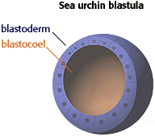

Developmental Mechanisms Problem Set
Problem 9 Tutorial: Structure of the blastula
Tutorial|
After the cleavage stage of development, the embryo is a hollow structure called the blastula. The exact shape of the blastula varies among species, depending on the size and yolk content of the egg. Sea urchin blastulas, for example, are simple hollow balls (see illustration to the right). In contrast, frog blastulas are very thick near the vegetal pole, and bird blastulas are lens-shaped. All blastulas have two main components--the blastoderm and blastocoel.The blastoderm is the sheet of cells on the outside of the blastula. The blastocoel is the cavity on the inside. |
 |


Contact the Development Team
http://biology.arizona.edu
All contents copyright © 1996. All rights reserved.